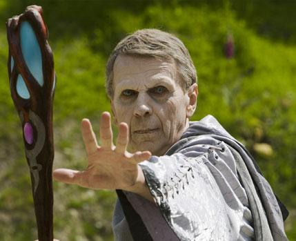

Forums galactiques > Marché galactique : discussions commerciales > Marché d'occasion
Pages : 1 2
| Nico le pacificateur Renommée de marchand : 0  26/07 ETU 19:50 | Score : 0 Détails Bonjour à tous ...(Je suis nouveau ,mon 1er petit magasin pour commancer.)
Je vend : 335 croiseur(s) léger et 178 chasseur(s) Le prix : 2480000 Leem(s) | ||
| Fitz Renommée de marchand : -4 27/07 ETU 19:04 | Score : 0 Détails combien pour les 335 croiseur(s) léger ?
| ||
| Nico le pacificateur Renommée de marchand : 0 27/07 ETU 22:48 | Score : 0 Détails Le prix des 335 croiseur(s) léger est de 2000000 leems.
Bien entendu le transport est assuré . | ||
| Gros Veinard Renommée de marchand : 316  28/07 ETU 01:44 | Score : 0 Détails News:
Sujet: Les grèvistes augmentent, les mouvement de foule foisonnent Suite à l'appel de grève de Sir Lord Grosveinard, un mouvement de foule vint à faire irruption dans ce marché et le contraindre à le fermer temporairement. | ||
| Nico le pacificateur Renommée de marchand : 0 28/07 ETU 22:28 | Score : 0 Détails Bonjour ,comandante et commandant.
Ouverture du marche .(faut faire vite avant que les grevistes arrive !) Je vend : 335 croiseur(s) léger et 178 chasseur(s) Le prix : 2480000 Leem(s) -croiseurs :2000000 Leems -chasseurs : 480000 Leems Vente energie : 792883 Energie : 210 Leems à l'unitée. | ||
| Volkow Renommée de marchand : 15  28/07 ETU 22:49 | Score : 0 Détails J'achète les 178 chasseurs...
| ||
| Unknow Renommée de marchand : 225  28/07 ETU 22:50 | Score : 0 Détails 210 leems l'unité d'energie , mais c'est quoi comme energie sa ? Elle est magique ou quoi
| ||
| Nico le pacificateur Renommée de marchand : 0 28/07 ETU 22:57 | Score : 0 Détails Je vous envois votre command.
| ||
| Gros Veinard Renommée de marchand : 316 28/07 ETU 23:21 | Score : 0 Détails News:
Sujet: Les grèvistes augmentent, les mouvement de foule foisonnent Suite à l'appel de grève de Sir Lord Grosveinard, un mouvement de foule vint à faire irruption dans ce marché et le contraindre à le fermer temporairement. | ||
| Volkow Renommée de marchand : 15 28/07 ETU 23:54 | Score : 0 Détails Merci pour les chasseurs.
Ah au fait pour la grève ne vous en faites pas, ils ne sont pas méchant.Suffit juste d'en empaller quelques uns et les autres s'enfuient...Et s'il revienne vous faites travailler votre imagination pour les faire souffrir et mourir de quelques façons que ce soient... | ||
| Gros Veinard Renommée de marchand : 316 28/07 ETU 23:58 | Score : 0 Détails Oui... allez dire cela a Feyd Rakin.. et autre qui avaient dis la même chose, là, ils pleurent leurs planetes donc oui... mefiez vous
| ||
| TKMA Renommée de marchand : 11  29/07 ETU 04:30 | Score : 0 Détails Chèr Gros Veinard acceptez que les petits ne césissent pas tous les enjeux dirons nous divins.
Spolieur de Dieu, tu nous affames ! | ||
| Volkow Renommée de marchand : 15 29/07 ETU 08:44 | Score : 0 Détails En plus Gors Veinard j'aimerais que vous m'expliquez COMMENT vous comptez aider les jeunes avec ces grèves??Non mais c'est un peu obscur c'est pour ça...
| ||
| Gros Veinard Renommée de marchand : 316 29/07 ETU 08:49 | Score : 0 Détails oui comme la force qui est en toi ^_^
| ||
| Volkow Renommée de marchand : 15 29/07 ETU 17:02 | Score : 0 Détails Hier j'ai mangé une pomme...
La vente continue... | ||
| Gros Veinard Renommée de marchand : 316 29/07 ETU 23:57 | Score : 0 Détails Et la pomme tombant de l'Arbre, Volkow en la voyant inventa la gravité... enfin avec quelques siecles de retard
TOUS EN GREVE | ||
| dark jojo Renommée de marchand : 0  30/07 ETU 19:40 | Score : 0 Détails Non je ne veux pas etre en gréve moi Gros veinard je resterais fidéle a mon poste.
| ||
| Gros Veinard Renommée de marchand : 316 31/07 ETU 01:27 | Score : 0 Détails Je ne crois pas t'avoir notifié... donc ne te prends pas pour le centre du monde a montrer que tu existes en venant mettre dans chaques salles pour dire
hey, je suis là... | ||
| Princesse Hita Renommée de marchand : 40  31/07 ETU 11:16 | Score : 0 Détails Ce n'est pas plutot toi qui fais ca, pour que tout le monde sache que tu es en grève, mais c'est ta vie...
| ||
| Gros Veinard Renommée de marchand : 316 31/07 ETU 13:14 | Score : 0 Détails Oui et la tienne Hita ne nous regarde pas non plus, continue donc de jouer a la dinette... va pondre tes lois qui ne servent a rien et évites de venir marcher sur mes plats de bande, je crois que tu n'es pas guildeene donc en effet, cela ne te concerne pas.. Et si tu crois que ça m'amuses.. je pense que tu n'as pas tout saisis l'ampleur de la chose.. donc va revoir Valorys et Winston et allez jouer ensemble a qui veut creer un Gouvernement.
--->[ ] |
Pages : 1 2
Forums galactiques > Marché galactique : discussions commerciales > Marché d'occasion